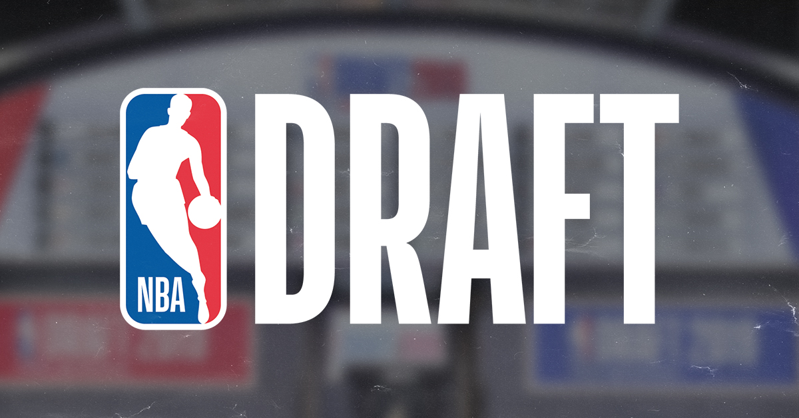

My name is Ethan Goldstein. I am an avid sports fan, and one of the sports that I am particularly enthusiastic about is basketball. There are many aspects of the game that I find entertaining -- the speed of the game, the competitiveness of each game throughout the season, and the suspense of every moment when the playoffs come around. However, one of my favorite parts of the season is in fact the offseason — particularly when it comes time for the entry-level draft. This is a time when each team will have an opportunity to select the next big stars of professional basketball, and I love to follow the prospects closely to see which players look the most ready to be stars.
{kind=link}
On this website, I will be posting my personal rankings for both NBA and WNBA 2022 draft prospects, based on who I think has the best set of skills to become a star in the professional leagues. All of the potential prospects come from a variety of different backgrounds — many play college basketball, but some currently play in lower-level professional leagues, or even may play internationally. I will also be using this website to discuss the history of the draft in both leagues, and how it is currently set-up, for any viewers who may not be familiar or interested to learn more. This website is intended to serve as a hub for all NBA draft information, and I hope it provides an interesting perspective into the basketball world for any viewers!

About Me
Junior at University of Michigan
Fun Fact: I play the trumpet in the Michigan Marching Band!